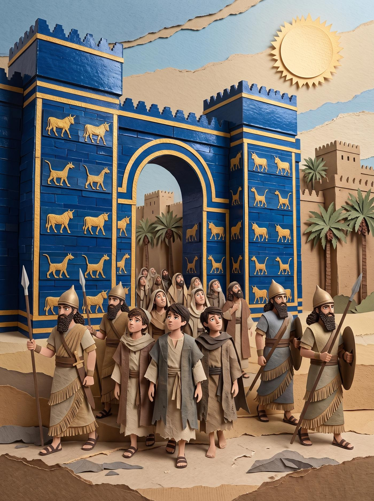
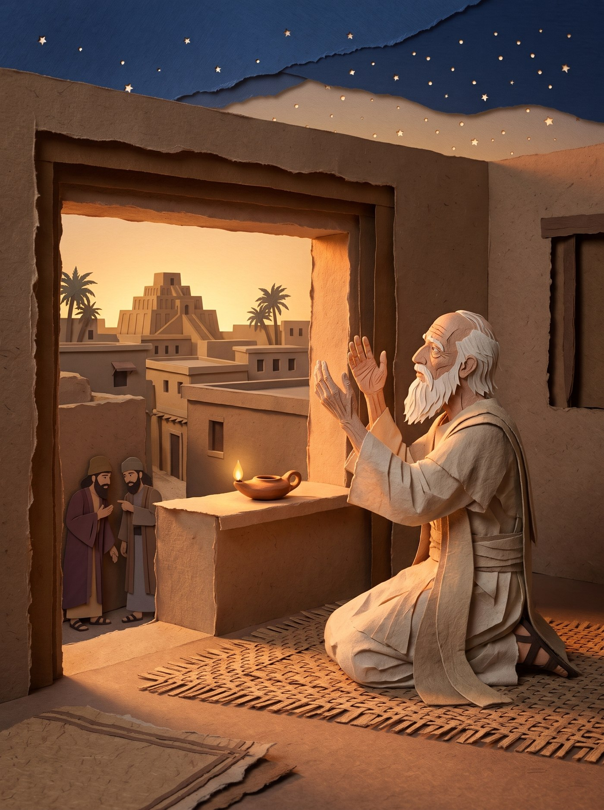
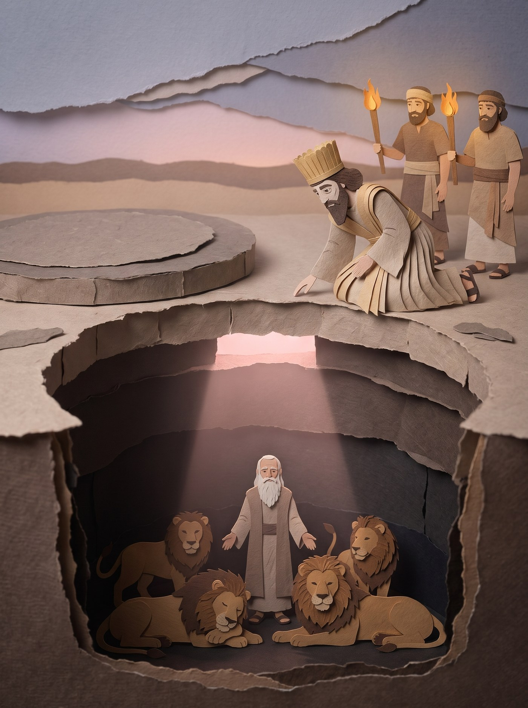

Capítulo 7
Daniel: fiel en Babilonia
Parte I: la promesa · Reyes y Crónicas (resumen); Daniel; Jeremías; Isaías; Habacuc
La escena
Recreación: así pudo haber sido. Los hechos están en 2 Reyes, 2 Crónicas, Daniel, Jeremías y Habacuc. Lo que pensaban y sentían se imagina a partir del texto y de lo que se sabe de la época.
Un reino partido
Después de David reina su hijo Salomón. Es el tiempo de oro de Israel. Salomón construye en Jerusalén, en el monte Moriah, el mismo monte donde Abraham subió con Isaac, un templo para Dios. Piedra labrada, cedro del Líbano, oro. Durante siglos ese templo va a ser el corazón del pueblo: el lugar de los sacrificios, de las fiestas, del Día de la Expiación.
Pero Salomón, el sabio, termina su vida lejos de Dios. Y cuando muere, el reino se parte en dos. Al norte, diez tribus forman el reino de Israel, con su capital en Samaria. Al sur, Judá, con Jerusalén y los descendientes de David.
Vienen siglos de reyes. Algunos buenos. La mayoría, no. Le levantan altares a otros dioses, a Baal, a Moloc, y llegan a quemar a sus propios hijos en el fuego como sacrificio. Y Dios no se queda callado. Les manda profetas, uno detrás de otro: Elías, Eliseo, Isaías, Jeremías. Hombres que gritan en las plazas, que lloran, que avisan. La Biblia lo resume así:
«Mas ellos hacían escarnio de los mensajeros de Dios, y menospreciaban sus palabras, burlándose de sus profetas, hasta que subió la ira de Jehová contra su pueblo, y no hubo ya remedio» (2 Cr 36:16).
En el año 722 antes de Cristo, el imperio de Asiria arrasa el reino del norte y se lleva a su gente. Las diez tribus se pierden en la historia. En su lugar, los asirios traen a vivir a Samaria a gente de otros pueblos, que se mezclan con los pocos israelitas que quedaron. De ahí van a salir los samaritanos. Vamos a encontrarnos con una de ellas, junto a un pozo, dentro de dos capítulos.
Judá aguanta un siglo más. Pero no aprende.
Un muchacho en el camino a Babilonia
Año 605 antes de Cristo. Un nuevo imperio domina el mundo: Babilonia. Su rey se llama Nabucodonosor. Y llega a las puertas de Jerusalén.
Esta vez no destruye la ciudad. Hace algo más inteligente: se lleva lo mejor que tiene. Algunos objetos sagrados del templo, para ponerlos en el templo de su dios. Y a los muchachos más brillantes de la nobleza de Judá: jóvenes sin defecto, de buena presencia, inteligentes, que puedan aprender la lengua y las letras de los caldeos y servir en el palacio del rey.
Entre ellos hay un adolescente llamado Daniel. Y tres amigos suyos: Ananías, Misael y Azarías.
Imagina ese camino. Más de mil kilómetros a pie, siguiendo el gran arco del río Éufrates, porque en medio está el desierto. Semanas de marcha. Atrás queda Jerusalén, el templo, la casa de sus padres, que quizás no vuelva a ver nunca. Adelante, la ciudad más grande del mundo.
Y un día la ven aparecer en el horizonte. Murallas enormes. Torres. Y una puerta revestida de ladrillos esmaltados de azul intenso, con toros y dragones de colores en relieve: la puerta de Ishtar. Por ahí entran los muchachos de Judá, polvorientos, cansados, mirando hacia arriba con la boca abierta.

Lo primero que hace Babilonia con ellos es quitarles el nombre. Daniel quiere decir «Dios es mi juez». Ahora lo van a llamar Beltsasar, un nombre que invoca a un dios babilonio. Ananías, «Dios ha tenido misericordia», pasa a ser Sadrac. Misael, Mesac. Azarías, «Dios ayuda», pasa a ser Abed-nego, «siervo de Nebo». Les cambian el nombre, la lengua, la comida, la ropa, los libros. Babilonia no quiere matarlos. Quiere convertirlos en babilonios.
Y les sirven la comida del rey. La mejor del imperio. Carne que quizás fue ofrecida a los ídolos, vino de la mesa real.
Y un muchacho de quince o dieciséis años, lejos de su casa, sin nadie que lo vigile, toma una decisión.
«Y Daniel propuso en su corazón no contaminarse con la porción de la comida del rey, ni con el vino que él bebía» (Dn 1:8).
Propuso en su corazón. No es una rebeldía de adolescente. No grita, no hace escándalo. Le pide con respeto al encargado que los ponga a prueba: diez días comiendo solo legumbres y tomando agua, y que después los compare con los demás. Pasan los diez días, y Daniel y sus amigos se ven más sanos que todos. Y Dios les da sabiduría e inteligencia por encima de todos los sabios de Babilonia.
Les quitaron el nombre. No pudieron quitarles el corazón.
Junto a los ríos de Babilonia
Mientras Daniel crece en el palacio, en Jerusalén las cosas se ponen peor. Los reyes de Judá se rebelan contra Babilonia, una y otra vez, sin escuchar al profeta Jeremías, que les ruega que se rindan. Y en el año 586 antes de Cristo, Nabucodonosor vuelve. Sitia Jerusalén hasta que la gente se muere de hambre. Rompe los muros. Y su general hace lo impensable:
«Y quemó la casa de Jehová, y la casa del rey, y todas las casas de Jerusalén» (2 R 25:9).
El templo de Salomón, el lugar donde Dios había dicho que pondría su nombre, convertido en ceniza. El altar de los sacrificios, destruido. El monte de Abraham, en ruinas. Miles de personas encadenadas, caminando hacia Babilonia.
Allá, en el exilio, alguien escribió una canción que todavía duele:
«Junto a los ríos de Babilonia, allí nos sentábamos, y aun llorábamos, acordándonos de Sion» (Sal 137:1).
Y Jeremías, que se quedó entre las ruinas, escribió un libro entero de lamentos. Lamentaciones. Cinco poemas de dolor sobre una ciudad destruida. Y justo en el medio de ese libro, en el centro mismo del dolor, aparece esto:
«Por la misericordia de Jehová no hemos sido consumidos, porque nunca decayeron sus misericordias. Nuevas son cada mañana; grande es tu fidelidad» (Lm 3:22-23).
Entre las cenizas del templo. Nuevas cada mañana.
El horno
En Babilonia, Nabucodonosor levanta una estatua de oro enorme en la llanura de Dura. Unos treinta metros de alto. Y manda que, cuando suene la música, todos se postren a adorarla. El que no lo haga, al horno de fuego.
Suena la música. Miles de personas caen de rodillas. Y tres hombres se quedan de pie: Sadrac, Mesac y Abed-nego, los amigos de Daniel.
Los llevan ante el rey. Nabucodonosor, furioso, les da una última oportunidad. Y ellos le contestan con una calma que asusta:
«He aquí nuestro Dios a quien servimos puede librarnos del horno de fuego ardiendo; y de tu mano, oh rey, nos librará. Y si no, sepas, oh rey, que no serviremos a tus dioses, ni tampoco adoraremos la estatua que has levantado» (Dn 3:17-18).
Y si no. Esas tres palabras son toda la fe de este capítulo. Dios puede librarnos. Y si no nos libra, igual no vamos a doblar la rodilla. No es una fe que pone condiciones. Es una fe que confía aunque no sepa cómo termina la historia.
El rey manda calentar el horno siete veces más. Tanto, que las llamas matan a los soldados que los echan adentro. Y de pronto Nabucodonosor se levanta asustado. Ve a cuatro hombres sueltos, caminando en medio del fuego sin quemarse. Y el cuarto, dice, parece un hijo de los dioses.
No estaban solos en el horno. Nunca lo estuvieron.
La escritura en la pared
Pasan los años. Muere Nabucodonosor. Y una noche del año 539 antes de Cristo, el que gobierna en Babilonia, Belsasar, hace un banquete para mil invitados. Y en medio de la borrachera manda traer las copas de oro que se robaron del templo de Jerusalén, y beben en ellas brindando por sus dioses de oro y de piedra.
Y en ese momento aparecen los dedos de una mano que escriben en la pared del palacio, a la luz de las lámparas. Al rey se le cambia el color de la cara, le tiemblan las rodillas. Nadie puede leer lo que dice. Hasta que traen a un anciano que los babilonios ya casi habían olvidado: Daniel.
Daniel lee. Y le dice al rey lo que significa una de esas palabras:
«TEKEL: Pesado has sido en balanza, y fuiste hallado falto» (Dn 5:27).
Esa misma noche, los ejércitos de los medos y los persas, bajo el rey Ciro, entran en Babilonia.
«La misma noche fue muerto Belsasar rey de los caldeos» (Dn 5:30).
El imperio que quemó el templo de Dios cayó en una sola noche.
La ventana abierta
Ahora gobierna Persia. Y Daniel, que ya tiene más de ochenta años, sigue en el palacio. Ha servido a reyes babilonios y ahora sirve a reyes persas, y siempre con la misma fama: era tan honesto que sus enemigos no le encontraban ninguna falta. Así que buscan atraparlo por el único lado posible: su fe.
Convencen al rey Darío de firmar una ley: durante treinta días, nadie puede pedirle nada a ningún dios ni a ningún hombre, sino solo al rey. El que lo haga, al foso de los leones.
Daniel se entera de que el edicto ya está firmado. Y hace lo de siempre.
«Cuando Daniel supo que el edicto había sido firmado, entró en su casa, y abiertas las ventanas de su cámara que daban hacia Jerusalén, se arrodillaba tres veces al día, y oraba y daba gracias delante de su Dios, como lo solía hacer antes» (Dn 6:10).

Abiertas las ventanas. Hacia Jerusalén. Una ciudad en ruinas que dejó de ver cuando era un muchacho, y hacia donde sigue mirando cuando ya es un anciano. Como lo solía hacer antes. No cambia nada. No esconde nada. No cierra la ventana para que no lo vean.
Lo ven. Lo denuncian. Y el rey, que lo aprecia, se da cuenta de que cayó en una trampa, y pasa el día entero buscando cómo salvarlo. No puede. La ley de los medos y los persas no se cambia. Y cuando echan a Daniel al foso, el rey le dice algo que es casi una oración:
«El Dios tuyo, a quien tú continuamente sirves, él te libre» (Dn 6:16).
Ponen una piedra sobre la boca del foso. El rey la sella con su anillo. Y se va a su palacio y no come, no duerme, no quiere música.
Al amanecer corre al foso. Grita el nombre de Daniel con la voz rota. Y desde el fondo, entre los leones, le responde un anciano tranquilo:
«Mi Dios envió su ángel, el cual cerró la boca de los leones, para que no me hiciesen daño» (Dn 6:22).

Su lucha. La lucha de Daniel no es contra los leones. Es contra algo más largo y más silencioso: setenta años lejos de casa. Lo sacaron de Jerusalén cuando era un muchacho y nunca volvió. Le cambiaron el nombre, el idioma, la comida, los maestros. Vivió toda su vida en una cultura que le exigía todo y que le ofrecía todo: poder, comida, honores, a cambio de dejar de ser quien era. Y además cargaba con el dolor de su pueblo. Ya viejo, Daniel lee en el libro de Jeremías que el exilio iba a durar setenta años, y se pone a orar con ayuno, vestido de luto. Y lo notable es cómo ora. Daniel, el hombre en quien sus enemigos no encontraban falta, no dice «ellos pecaron». Dice «nosotros»: «hemos pecado, hemos cometido iniquidad, hemos hecho impíamente, y hemos sido rebeldes» (Dn 9:5). Y se agarra de lo único que le queda: «De Jehová nuestro Dios es el tener misericordia y el perdonar, aunque contra él nos hemos rebelado» (Dn 9:9). Y termina rogando como un hombre que ya no tiene argumentos: «Oye, Señor; oh Señor, perdona» (Dn 9:19). El hombre más fiel de Babilonia sabía que no podía presentarse ante Dios por su fidelidad. Solo por su misericordia.
Uno como un hijo de hombre
Una noche, Daniel tiene una visión. Ve pasar a los imperios del mundo como bestias que salen del mar, una detrás de otra, cada una más terrible. Y después ve un trono, y en el trono al Anciano de días, Dios mismo, con su ropa blanca como la nieve. Y entonces ve llegar a alguien:
«Miraba yo en la visión de la noche, y he aquí con las nubes del cielo venía uno como un hijo de hombre, que vino hasta el Anciano de días, y le hicieron acercarse delante de él» (Dn 7:13).
Uno como un hijo de hombre. Alguien con forma humana, que viene con las nubes del cielo, como solo viene Dios. Y a ese, Dios le entrega todo:
«Y le fue dado dominio, gloria y reino, para que todos los pueblos, naciones y lenguas le sirvieran; su dominio es dominio eterno, que nunca pasará, y su reino uno que no será destruido» (Dn 7:14).
Las visiones de Daniel han sido interpretadas de muchas maneras, y en este libro no vamos a entrar en las interpretaciones sobre el fin de los tiempos. Pero quédate con este título: «hijo de hombre». Un día, un carpintero de Nazaret lo va a usar para hablar de sí mismo. Más que ningún otro. Y lo va a usar, justamente, para perdonar pecados.
El nuevo pacto
Mientras el pueblo lloraba en Babilonia, Dios les hizo llegar promesas. Jeremías les había escrito que el exilio iba a durar setenta años, y que después Dios los iba a traer de vuelta. Y les anunció algo más grande que volver a casa:
«He aquí que vienen días, dice Jehová, en los cuales haré nuevo pacto con la casa de Israel y con la casa de Judá» (Jr 31:31).
Un pacto nuevo. Ya no escrito en piedra, sino en el corazón. Y con una promesa que ningún sacrificio había podido cumplir del todo: «porque perdonaré la maldad de ellos, y no me acordaré más de su pecado» (Jr 31:34).
No me acordaré más. Después de siglos de corderos y de machos cabríos, después de un templo quemado, Dios anuncia un perdón que borra hasta el recuerdo.
Y en los mismos años, el profeta Isaías había dejado escrito un retrato extraño. El de un Siervo de Dios que no viene con ejércitos, sino herido. Un hombre despreciado, que carga con lo que otros hicieron:
«Mas él herido fue por nuestras rebeliones, molido por nuestros pecados; el castigo de nuestra paz fue sobre él, y por su llaga fuimos nosotros curados» (Is 53:5).
«Todos nosotros nos descarriamos como ovejas, cada cual se apartó por su camino; mas Jehová cargó en él el pecado de todos nosotros» (Is 53:6).
Y para que no queden dudas de qué se trata, lo dice con la imagen que venimos siguiendo desde el principio de este libro:
«Angustiado él, y afligido, no abrió su boca; como cordero fue llevado al matadero; y como oveja delante de sus trasquiladores, enmudeció, y no abrió su boca» (Is 53:7).
El cordero otra vez. Pero esta vez el cordero no es un animal. Es una persona.
Y otro profeta, Miqueas, había anunciado incluso el lugar donde iba a nacer el que gobernaría a Israel. No en Jerusalén, la capital. En un pueblito:
«Pero tú, Belén Efrata, pequeña para estar entre las familias de Judá, de ti me saldrá el que será Señor en Israel; y sus salidas son desde el principio, desde los días de la eternidad» (Mi 5:2).
Belén. La casa del pan. El pueblo de Rut y de David. Y alguien que va a salir de ahí, pero cuyo origen es desde la eternidad.
Cuatrocientos años de silencio
Se cumplen los setenta años. Ciro, rey de Persia, firma un decreto permitiendo a los judíos volver a su tierra y reconstruir el templo. Vuelven unos pocos, pobres, a una ciudad en ruinas. Reconstruyen el templo, más pequeño que el de Salomón; los ancianos que habían visto el primero lloran al ver el segundo. Levantan los muros. Vuelven los sacrificios.
Y después de Malaquías, el último profeta, Dios se queda callado.
Cuatrocientos años. Sin profetas. Sin visiones. Persas, griegos, y al final los romanos, que llegan con sus legiones y ponen en Jerusalén a un rey títere llamado Herodes. Generaciones enteras de judíos que nacen y mueren repitiendo las promesas: un descendiente de David, un hijo de hombre, un Siervo herido, uno que va a nacer en Belén.
¿Se habrá olvidado Dios?
No. Estaba esperando el momento exacto.
La historia según la Biblia
Reina-Valera 1960
Fiel en tierra extraña
«Cuando Daniel supo que el edicto había sido firmado, entró en su casa, y abiertas las ventanas de su cámara que daban hacia Jerusalén, se arrodillaba tres veces al día, y oraba y daba gracias delante de su Dios, como lo solía hacer antes.» — Daniel 6:10
El hijo de hombre
«Miraba yo en la visión de la noche, y he aquí con las nubes del cielo venía uno como un hijo de hombre, que vino hasta el Anciano de días, y le hicieron acercarse delante de él.» — Daniel 7:13
El nuevo pacto
«Y no enseñará más ninguno a su prójimo, ni ninguno a su hermano, diciendo: Conoce a Jehová; porque todos me conocerán, desde el más pequeño de ellos hasta el más grande, dice Jehová; porque perdonaré la maldad de ellos, y no me acordaré más de su pecado.» — Jeremías 31:34
El Siervo herido
«Mas él herido fue por nuestras rebeliones, molido por nuestros pecados; el castigo de nuestra paz fue sobre él, y por su llaga fuimos nosotros curados.» — Isaías 53:5
La sombra de Jesús
El Hijo del Hombre. El título que Daniel vio en su visión fue el que Jesús eligió para hablar de sí mismo. Y la noche en que lo juzgaron, cuando el sumo sacerdote le preguntó si era el Cristo, Jesús le respondió con las palabras de Daniel: «Yo soy; y veréis al Hijo del Hombre sentado a la diestra del poder de Dios, y viniendo en las nubes del cielo» (Mc 14:62). El sumo sacerdote entendió perfectamente lo que decía, y se rasgó la ropa.
El nuevo pacto en su sangre. La noche antes de morir, en la cena de Pascua, Jesús tomó una copa de vino y dijo: «Esta copa es el nuevo pacto en mi sangre, que por vosotros se derrama» (Lc 22:20). El pacto que Jeremías anunció, el perdón que ya no se acuerda del pecado, llegó en una cena de Pascua.
El cordero que no abrió su boca. Siglos después, un funcionario de Etiopía iba en su carro leyendo en voz alta Isaías 53, sin entender de quién hablaba. Un discípulo llamado Felipe se le acercó, «y comenzando desde esta escritura, le anunció el evangelio de Jesús» (Hch 8:35). Es lo mismo que hace este libro: empezar por lo que estaba escrito, y llegar a Jesús.
Fiel en Babilonia. Daniel se negó a doblar la rodilla ante el poder y la comodidad. Siglos después, en el desierto, Jesús también fue tentado con todos los reinos del mundo y su gloria, y tampoco se arrodilló.
Para seguir leyendo
- 2 Reyes 17 y 25: la caída de Samaria y la de Jerusalén.
- Daniel 1, 3, 5 y 6: la comida del rey, el horno, la escritura en la pared y los leones.
- Daniel 9: la oración de Daniel pidiendo perdón por su pueblo.
- Salmo 137 y Lamentaciones 3: el llanto del exilio y las misericordias nuevas cada mañana.
- Habacuc 1 a 3: el profeta que le reclamó a Dios.
- Jeremías 31 e Isaías 53: el nuevo pacto y el Siervo herido.